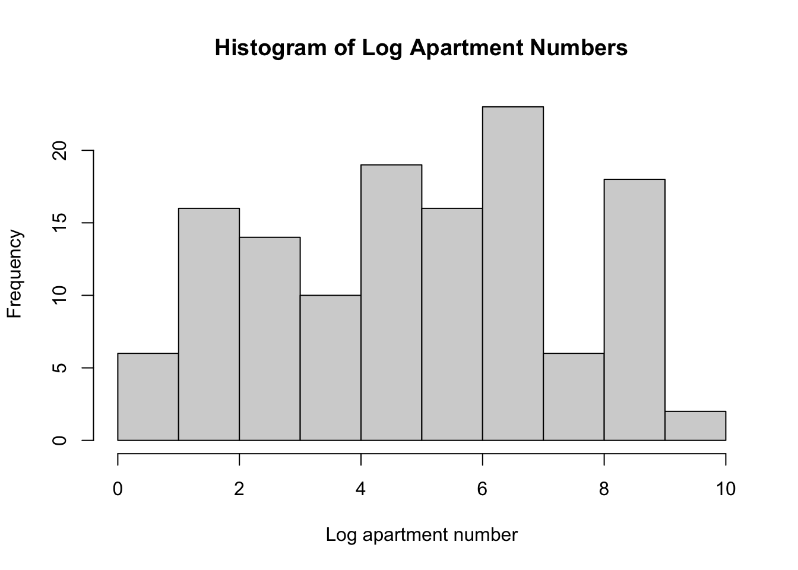
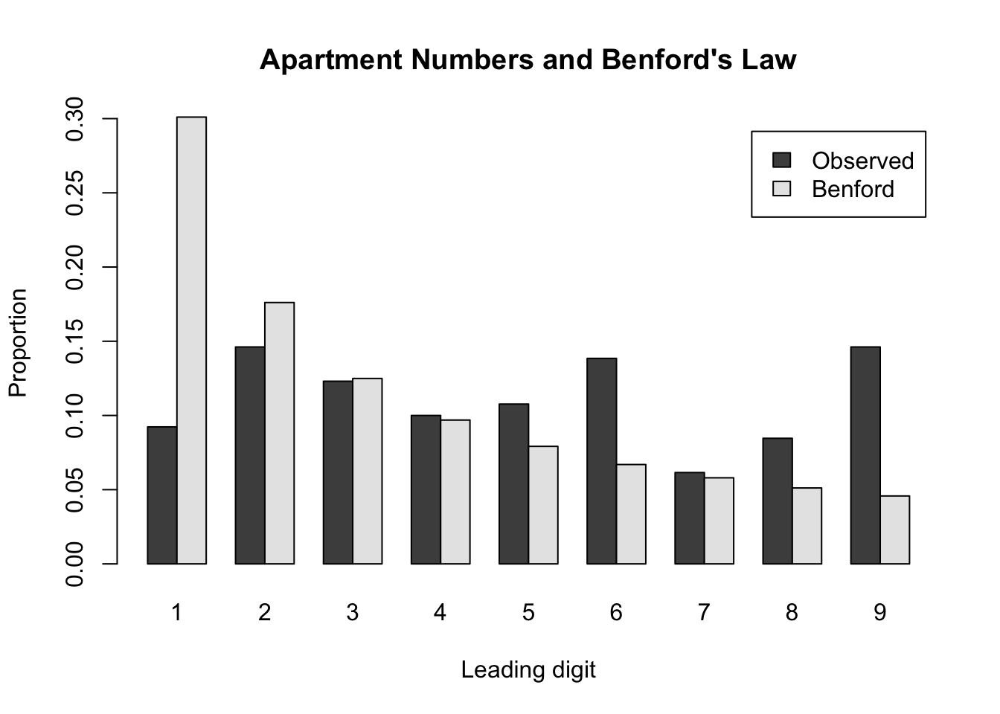

library(haven)
library(knitr)
aux <- read_xpt("AUX_I.XPT")
demo <- read_xpt("DEMO_I.XPT")
nhanes <- merge(aux, demo, by = "SEQN", all = FALSE)
dim(nhanes)[1] 4582 119library(haven)
library(knitr)
aux <- read_xpt("AUX_I.XPT")
demo <- read_xpt("DEMO_I.XPT")
nhanes <- merge(aux, demo, by = "SEQN", all = FALSE)
dim(nhanes)[1] 4582 119nhanes$DMDCITZN[nhanes$DMDCITZN %in% c(7, 9)] <- NA
nhanes$INDHHIN2[nhanes$INDHHIN2 %in% c(77, 99)] <- NA
nhanes$gender <- factor(
nhanes$RIAGENDR,
levels = c(1, 2),
labels = c("Male", "Female")
)
nhanes$citizenship <- factor(
nhanes$DMDCITZN,
levels = c(1, 2),
labels = c("US citizen", "Not a US citizen")
)
nhanes$children_u5 <- as.numeric(nhanes$DMDHHSZA)
income_labels <- c(
"1" = "$0-$4,999", "2" = "$5,000-$9,999",
"3" = "$10,000-$14,999", "4" = "$15,000-$19,999",
"5" = "$20,000-$24,999", "6" = "$25,000-$34,999",
"7" = "$35,000-$44,999", "8" = "$45,000-$54,999",
"9" = "$55,000-$64,999", "10" = "$65,000-$74,999",
"12" = "$20,000 and over (broad)",
"13" = "Under $20,000 (broad)",
"14" = "$75,000-$99,999", "15" = "$100,000 and over"
)
income_order <- c(1, 2, 13, 3, 4, 12, 5, 6, 7, 8, 9, 10, 14, 15)
nhanes$income_category <- ordered(
nhanes$INDHHIN2,
levels = income_order,
labels = unname(income_labels[as.character(income_order)])
)
income_values <- c(
"1" = 2500, "2" = 7500, "3" = 12500, "4" = 17500,
"5" = 22500, "6" = 30000, "7" = 40000, "8" = 50000,
"9" = 60000, "10" = 70000, "12" = 20000, "13" = 10000,
"14" = 87500, "15" = 100000
)
nhanes$income_10k <- unname(
income_values[as.character(nhanes$INDHHIN2)]
) / 10000
nhanes$AUXTWIDR[nhanes$AUXTWIDR %in% c(555, 777, 888)] <- NA
nhanes$AUXTWIDL[nhanes$AUXTWIDL %in% c(555, 777, 888)] <- NA
table(nhanes$gender, useNA = "ifany")
Male Female
2176 2406 table(nhanes$citizenship, useNA = "ifany")
US citizen Not a US citizen <NA>
3684 884 14 table(nhanes$children_u5, useNA = "ifany")
0 1 2 3
3463 737 317 65 kable(
as.data.frame(table(nhanes$income_category, useNA = "ifany")),
col.names = c("Annual household income", "Count"),
caption = "Annual household income categories"
)| Annual household income | Count |
|---|---|
| $0-$4,999 | 101 |
| $5,000-$9,999 | 146 |
| Under $20,000 (broad) | 53 |
| $10,000-$14,999 | 233 |
| $15,000-$19,999 | 262 |
| $20,000 and over (broad) | 145 |
| $20,000-$24,999 | 272 |
| $25,000-$34,999 | 461 |
| $35,000-$44,999 | 439 |
| $45,000-$54,999 | 381 |
| $55,000-$64,999 | 295 |
| $65,000-$74,999 | 244 |
| $75,000-$99,999 | 458 |
| $100,000 and over | 795 |
| NA | 297 |
model1R <- glm(
AUXTWIDR ~ gender,
data = nhanes,
family = poisson(link = "log")
)
model2R <- glm(
AUXTWIDR ~ gender + citizenship + children_u5 + income_10k,
data = nhanes,
family = poisson(link = "log")
)
model1L <- glm(
AUXTWIDL ~ gender,
data = nhanes,
family = poisson(link = "log")
)
model2L <- glm(
AUXTWIDL ~ gender + citizenship + children_u5 + income_10k,
data = nhanes,
family = poisson(link = "log")
)
models <- list("1R" = model1R, "2R" = model2R,
"1L" = model1L, "2L" = model2L)
get_irr <- function(fit, model_name) {
co <- summary(fit)$coefficients
data.frame(
Model = model_name,
Term = rownames(co),
IRR = exp(co[, "Estimate"]),
Lower_95 = exp(co[, "Estimate"] - 1.96 * co[, "Std. Error"]),
Upper_95 = exp(co[, "Estimate"] + 1.96 * co[, "Std. Error"]),
p_value = co[, ncol(co)],
row.names = NULL
)
}
irr_table <- do.call(
rbind,
lapply(names(models), function(nm) get_irr(models[[nm]], nm))
)
irr_table$IRR <- round(irr_table$IRR, 3)
irr_table$Lower_95 <- round(irr_table$Lower_95, 3)
irr_table$Upper_95 <- round(irr_table$Upper_95, 3)
irr_table$p_value <- signif(irr_table$p_value, 3)
kable(
irr_table,
col.names = c("Model", "Coefficient", "IRR", "95% CI lower",
"95% CI upper", "p-value"),
caption = "Poisson regression incidence rate ratios"
)| Model | Coefficient | IRR | 95% CI lower | 95% CI upper | p-value |
|---|---|---|---|---|---|
| 1R | (Intercept) | 84.317 | 83.911 | 84.726 | 0.00e+00 |
| 1R | genderFemale | 1.009 | 1.003 | 1.016 | 6.13e-03 |
| 2R | (Intercept) | 87.395 | 86.688 | 88.107 | 0.00e+00 |
| 2R | genderFemale | 1.013 | 1.006 | 1.020 | 3.19e-04 |
| 2R | citizenshipNot a US citizen | 1.071 | 1.062 | 1.080 | 0.00e+00 |
| 2R | children_u5 | 1.000 | 0.995 | 1.005 | 9.64e-01 |
| 2R | income_10k | 0.990 | 0.989 | 0.991 | 0.00e+00 |
| 1L | (Intercept) | 84.758 | 84.349 | 85.170 | 0.00e+00 |
| 1L | genderFemale | 1.013 | 1.006 | 1.020 | 1.31e-04 |
| 2L | (Intercept) | 87.310 | 86.601 | 88.024 | 0.00e+00 |
| 2L | genderFemale | 1.015 | 1.008 | 1.022 | 1.95e-05 |
| 2L | citizenshipNot a US citizen | 1.041 | 1.032 | 1.050 | 0.00e+00 |
| 2L | children_u5 | 0.982 | 0.977 | 0.987 | 0.00e+00 |
| 2L | income_10k | 0.994 | 0.993 | 0.995 | 0.00e+00 |
get_model_stats <- function(fit, model_name) {
mf <- model.frame(fit)
response <- model.response(mf)
null_fit <- glm(response ~ 1, family = fit$family)
data.frame(
Model = model_name,
N = nobs(fit),
McFadden_pseudo_R2 = 1 - as.numeric(logLik(fit)) /
as.numeric(logLik(null_fit)),
AIC = AIC(fit)
)
}
model_stats <- do.call(
rbind,
lapply(names(models), function(nm) get_model_stats(models[[nm]], nm))
)
model_stats$McFadden_pseudo_R2 <- round(model_stats$McFadden_pseudo_R2, 4)
model_stats$AIC <- round(model_stats$AIC, 2)
kable(
model_stats,
col.names = c("Model", "Sample size", "McFadden pseudo-R2", "AIC"),
caption = "Model fit statistics"
)| Model | Sample size | McFadden pseudo-R2 | AIC |
|---|---|---|---|
| 1R | 4149 | 0.0001 | 96618.48 |
| 2R | 3886 | 0.0072 | 90028.77 |
| 1L | 4103 | 0.0001 | 98685.15 |
| 2L | 3847 | 0.0032 | 91798.98 |
co2L <- summary(model2L)$coefficients
gender_row <- co2L["genderFemale", ]
gender_irr <- exp(gender_row["Estimate"])
gender_ci <- exp(
gender_row["Estimate"] + c(-1, 1) * 1.96 * gender_row["Std. Error"]
)
gender_p <- gender_row["Pr(>|z|)"]
gender_test <- data.frame(
IRR_Female_vs_Male = unname(gender_irr),
CI_lower = unname(gender_ci[1]),
CI_upper = unname(gender_ci[2]),
p_value = unname(gender_p)
)
kable(round(gender_test, 4),
caption = "Model 2L: test of the gender incidence rate ratio")| IRR_Female_vs_Male | CI_lower | CI_upper | p_value |
|---|---|---|---|
| 1.0151 | 1.0081 | 1.0221 | 0 |
The female-to-male incidence rate ratio is 1.0151 (95% CI: 1.0081–1.0221, p < 0.001). After adjusting for the other variables, females have a slightly higher incidence rate than males. The difference is statistically significant.
library(emmeans)Welcome to emmeans.
Caution: You lose important information if you filter this package's results.
See '? untidy'emm_link <- emmeans(model2L, ~ gender)
emm_response <- regrid(emm_link, transform = "response")
kable(
as.data.frame(summary(emm_response, infer = TRUE)),
digits = 3,
caption = "Adjusted predicted left-ear tympanometric width by gender"
)| gender | rate | SE | df | asymp.LCL | asymp.UCL | z.ratio | p.value |
|---|---|---|---|---|---|---|---|
| Male | 85.620 | 0.246 | Inf | 85.138 | 86.101 | 348.428 | 0 |
| Female | 86.912 | 0.243 | Inf | 86.437 | 87.388 | 358.020 | 0 |
predicted_difference <- contrast(
emm_response,
method = list("Female - Male" = c(-1, 1)),
adjust = "none"
)
predicted_test <- as.data.frame(summary(predicted_difference, infer = TRUE))
kable(
predicted_test,
digits = 4,
caption = "Test of the difference in adjusted predicted values (Female - Male)"
)| contrast | estimate | SE | df | asymp.LCL | asymp.UCL | z.ratio | p.value |
|---|---|---|---|---|---|---|---|
| Female - Male | 1.2928 | 0.3027 | Inf | 0.6995 | 1.8861 | 4.2709 | 0 |
The adjusted predicted left-ear tympanometric width is 1.2928 units higher for females than for males (95% CI: 0.6995–1.8861, p < 0.001). This difference is statistically significant.
library(DBI)
library(RSQLite)
library(microbenchmark)
sakila_file <- "sakila.db"
sakila <- dbConnect(SQLite(), sakila_file)store_stats_r <- function() {
stores <- dbGetQuery(sakila, "SELECT store_id FROM store")
customers <- dbGetQuery(sakila, "SELECT store_id, active FROM customer")
out <- lapply(stores$store_id, function(id) {
x <- customers[customers$store_id == id, , drop = FALSE]
n <- nrow(x)
n_active <- sum(x$active == 1, na.rm = TRUE)
data.frame(
store_id = id,
n_customers = n,
n_active = n_active,
active_percent = if (n > 0) 100 * n_active / n else NA_real_
)
})
do.call(rbind, out)
}
store_stats_r() store_id n_customers n_active active_percent
1 1 326 318 97.54601
2 2 273 266 97.43590store_stats_sql <- function() {
dbGetQuery(
sakila,
"
SELECT s.store_id,
COUNT(c.customer_id) AS n_customers,
SUM(CASE WHEN c.active = 1 THEN 1 ELSE 0 END) AS n_active,
CASE WHEN COUNT(c.customer_id) = 0 THEN NULL
ELSE 100.0 * SUM(CASE WHEN c.active = 1 THEN 1 ELSE 0 END)
/ COUNT(c.customer_id)
END AS active_percent
FROM store AS s
LEFT JOIN customer AS c ON s.store_id = c.store_id
GROUP BY s.store_id
ORDER BY s.store_id
"
)
}
store_stats_sql() store_id n_customers n_active active_percent
1 1 326 318 97.54601
2 2 273 266 97.43590bench_store <- microbenchmark(
R_operations = store_stats_r(),
single_SQL = store_stats_sql(),
times = 50
)Warning in microbenchmark(R_operations = store_stats_r(), single_SQL =
store_stats_sql(), : less accurate nanosecond times to avoid potential integer
overflowsbench_storeUnit: microseconds
expr min lq mean median uq max neval
R_operations 690.768 709.341 778.6900 752.9035 802.739 1025.533 50
single_SQL 268.058 279.169 306.9071 289.4600 314.921 824.428 50staff_country_r <- function() {
staff <- dbGetQuery(sakila,
"SELECT staff_id, first_name, last_name, address_id FROM staff")
address <- dbGetQuery(sakila, "SELECT address_id, city_id FROM address")
city <- dbGetQuery(sakila, "SELECT city_id, country_id FROM city")
country <- dbGetQuery(sakila, "SELECT country_id, country FROM country")
out <- merge(staff, address, by = "address_id")
out <- merge(out, city, by = "city_id")
out <- merge(out, country, by = "country_id")
out <- out[order(out$staff_id), ]
data.frame(name = paste(out$first_name, out$last_name), country = out$country)
}
staff_country_r() name country
1 Mike Hillyer Canada
2 Jon Stephens Australiastaff_country_sql <- function() {
dbGetQuery(
sakila,
"
SELECT s.first_name || ' ' || s.last_name AS name,
co.country AS country
FROM staff AS s
INNER JOIN address AS a ON s.address_id = a.address_id
INNER JOIN city AS ci ON a.city_id = ci.city_id
INNER JOIN country AS co ON ci.country_id = co.country_id
ORDER BY s.staff_id
"
)
}
staff_country_sql() name country
1 Mike Hillyer Canada
2 Jon Stephens Australiabench_staff <- microbenchmark(
R_operations = staff_country_r(),
single_SQL = staff_country_sql(),
times = 50
)
bench_staffUnit: microseconds
expr min lq mean median uq max neval
R_operations 1336.149 1368.785 1463.9132 1400.4370 1491.416 3144.782 50
single_SQL 114.390 125.050 150.5889 138.2315 150.265 675.557 50film_revenue_r <- function() {
payment <- dbGetQuery(sakila,
"SELECT rental_id, amount FROM payment WHERE rental_id IS NOT NULL")
rental <- dbGetQuery(sakila, "SELECT rental_id, inventory_id FROM rental")
inventory <- dbGetQuery(sakila, "SELECT inventory_id, film_id FROM inventory")
film <- dbGetQuery(sakila, "SELECT film_id, title FROM film")
out <- merge(payment, rental, by = "rental_id")
out <- merge(out, inventory, by = "inventory_id")
out <- merge(out, film, by = "film_id")
revenue <- aggregate(amount ~ film_id + title, data = out, FUN = sum)
revenue[revenue$amount == max(revenue$amount), c("title", "amount")]
}
film_revenue_r() title amount
842 TELEGRAPH VOYAGE 231.73film_revenue_sql <- function() {
dbGetQuery(
sakila,
"
SELECT f.title, SUM(p.amount) AS total_value
FROM payment AS p
INNER JOIN rental AS r ON p.rental_id = r.rental_id
INNER JOIN inventory AS i ON r.inventory_id = i.inventory_id
INNER JOIN film AS f ON i.film_id = f.film_id
GROUP BY f.film_id, f.title
HAVING SUM(p.amount) = (
SELECT MAX(film_total)
FROM (
SELECT SUM(p2.amount) AS film_total
FROM payment AS p2
INNER JOIN rental AS r2 ON p2.rental_id = r2.rental_id
INNER JOIN inventory AS i2 ON r2.inventory_id = i2.inventory_id
GROUP BY i2.film_id
) AS totals
)
ORDER BY f.title
"
)
}
film_revenue_sql() title total_value
1 TELEGRAPH VOYAGE 231.73bench_film <- microbenchmark(
R_operations = film_revenue_r(),
single_SQL = film_revenue_sql(),
times = 50
)
bench_filmUnit: milliseconds
expr min lq mean median uq max neval
R_operations 35.75081 36.17430 37.27227 37.05939 38.01077 40.91238 50
single_SQL 20.71414 20.82378 21.26308 21.09352 21.24755 23.75806 50zip_file <- file.path(getwd(), "au-500.zip")
zip_url <- "https://www.briandunning.com/sample-data/au-500.zip"
zip_contents <- if (file.exists(zip_file)) {
tryCatch(unzip(zip_file, list = TRUE), error = function(e) NULL)
} else {
NULL
}
if (is.null(zip_contents) || nrow(zip_contents) == 0) {
if (file.exists(zip_file)) file.remove(zip_file)
download.file(zip_url, zip_file, mode = "wb", method = "libcurl")
zip_contents <- tryCatch(unzip(zip_file, list = TRUE), error = function(e) NULL)
}
if (is.null(zip_contents) || nrow(zip_contents) == 0) {
stop("The Australia ZIP file could not be read. Please rerun this chunk and check your internet connection.")
}
csv_dir <- file.path(tempdir(), "au500")
if (dir.exists(csv_dir)) unlink(csv_dir, recursive = TRUE)
dir.create(csv_dir, showWarnings = FALSE, recursive = TRUE)
unzip(zip_file, exdir = csv_dir, overwrite = TRUE)
csv_files <- list.files(
csv_dir, pattern = "\\.csv$", full.names = TRUE,
recursive = TRUE, ignore.case = TRUE
)
if (length(csv_files) == 0) {
stop("The ZIP file was extracted, but no CSV file was found inside it.")
}
csv_path <- csv_files[1]
australia <- read.csv(
csv_path,
colClasses = "character",
stringsAsFactors = FALSE,
check.names = FALSE
)
print(dim(australia))[1] 500 11print(names(australia)) [1] "first_name" "last_name" "company_name" "address" "city"
[6] "state" "post" "phone1" "phone2" "email"
[11] "web" head(australia) first_name last_name company_name address
1 Rebbecca Didio Brandt, Jonathan F Esq 171 E 24th St
2 Stevie Hallo Landrum Temporary Services 22222 Acoma St
3 Mariko Stayer Inabinet, Macre Esq 534 Schoenborn St #51
4 Gerardo Woodka Morris Downing & Sherred 69206 Jackson Ave
5 Mayra Bena Buelt, David L Esq 808 Glen Cove Ave
6 Idella Scotland Artesian Ice & Cold Storage Co 373 Lafayette St
city state post phone1 phone2 email
1 Leith TAS 7315 03-8174-9123 0458-665-290 rebbecca.didio@didio.com.au
2 Proston QLD 4613 07-9997-3366 0497-622-620 stevie.hallo@hotmail.com
3 Hamel WA 6215 08-5558-9019 0427-885-282 mariko_stayer@hotmail.com
4 Talmalmo NSW 2640 02-6044-4682 0443-795-912 gerardo_woodka@hotmail.com
5 Lane Cove NSW 1595 02-1455-6085 0453-666-885 mayra.bena@gmail.com
6 Cartmeticup WA 6316 08-7868-1355 0451-966-921 idella@hotmail.com
web
1 http://www.brandtjonathanfesq.com.au
2 http://www.landrumtemporaryservices.com.au
3 http://www.inabinetmacreesq.com.au
4 http://www.morrisdowningsherred.com.au
5 http://www.bueltdavidlesq.com.au
6 http://www.artesianicecoldstorageco.com.auwebsites <- trimws(australia[["web"]])
websites <- sub("/+$", "", websites)
com_percent <- 100 * mean(
grepl("\\.com$", websites, ignore.case = TRUE),
na.rm = TRUE
)
com_percent[1] 00%.
email <- trimws(australia[["email"]])
valid_email <- !is.na(email) & email != "" &
grepl("@", email, fixed = TRUE)
email_domain <- tolower(
sub("^[^@]*@", "", email[valid_email])
)
domain_counts <- sort(table(email_domain), decreasing = TRUE)
most_common <- domain_counts[
domain_counts == max(domain_counts)
]
most_commonhotmail.com
114 The most common email domain(s) are hotmail.com
company <- australia[["company_name"]]
has_nonalpha <- grepl(
"[^[:alpha:],[:space:]]", company
)
has_nonalpha_no_ampersand <- grepl(
"[^[:alpha:],[:space:]&]", company
)
data.frame(
measure = c(
"Exclude commas and whitespace",
"Also exclude ampersands"
),
proportion = c(
mean(has_nonalpha, na.rm = TRUE),
mean(has_nonalpha_no_ampersand, na.rm = TRUE)
)
) measure proportion
1 Exclude commas and whitespace 0.090
2 Also exclude ampersands 0.008format_au_phone <- function(x) {
digits <- gsub("[^0-9]", "", x)
out <- x
valid <- !is.na(digits) & nchar(digits) == 10
out[valid] <- sub(
"^(\\d{4})(\\d{3})(\\d{3})$",
"\\1-\\2-\\3",
digits[valid]
)
out
}
australia[["phone1"]] <- format_au_phone(
australia[["phone1"]]
)
australia[["phone2"]] <- format_au_phone(
australia[["phone2"]]
)
head(australia[c("phone1", "phone2")], 10) phone1 phone2
1 0381-749-123 0458-665-290
2 0799-973-366 0497-622-620
3 0855-589-019 0427-885-282
4 0260-444-682 0443-795-912
5 0214-556-085 0453-666-885
6 0878-681-355 0451-966-921
7 0865-228-931 0427-991-688
8 0252-269-402 0415-961-606
9 0731-849-989 0411-732-965
10 0868-904-661 0461-862-457address <- trimws(australia[["address"]])
apartment_chr <- ifelse(
grepl("[0-9]+$", address),
sub("^.*?([0-9]+)$", "\\1", address, perl = TRUE),
NA_character_
)
apartment_number <- suppressWarnings(
as.numeric(apartment_chr)
)
apartment_number <- apartment_number[
!is.na(apartment_number) & apartment_number > 0
]
hist(
log(apartment_number),
main = "Histogram of Log Apartment Numbers",
xlab = "Log apartment number"
)
length(apartment_number)[1] 130first_digit <- as.integer(
substr(as.character(apartment_number), 1, 1)
)
observed <- tabulate(first_digit, nbins = 9)
benford_prob <- log10(1 + 1 / (1:9))
benford_table <- data.frame(
First_digit = 1:9,
Observed_count = observed,
Observed_proportion = observed / sum(observed),
Benford_proportion = benford_prob,
Expected_count = sum(observed) * benford_prob
)
knitr::kable(
benford_table,
digits = 3,
caption = "Observed first digits compared with Benford's law"
)| First_digit | Observed_count | Observed_proportion | Benford_proportion | Expected_count |
|---|---|---|---|---|
| 1 | 12 | 0.092 | 0.301 | 39.134 |
| 2 | 19 | 0.146 | 0.176 | 22.892 |
| 3 | 16 | 0.123 | 0.125 | 16.242 |
| 4 | 13 | 0.100 | 0.097 | 12.598 |
| 5 | 14 | 0.108 | 0.079 | 10.294 |
| 6 | 18 | 0.138 | 0.067 | 8.703 |
| 7 | 8 | 0.062 | 0.058 | 7.539 |
| 8 | 11 | 0.085 | 0.051 | 6.650 |
| 9 | 19 | 0.146 | 0.046 | 5.948 |
barplot(
rbind(
Observed = observed / sum(observed),
Benford = benford_prob
),
beside = TRUE,
names.arg = 1:9,
xlab = "Leading digit",
ylab = "Proportion",
main = "Apartment Numbers and Benford's Law",
legend.text = TRUE
)
benford_test <- chisq.test(
observed,
p = benford_prob
)
benford_test
Chi-squared test for given probabilities
data: observed
X-squared = 62.268, df = 8, p-value = 1.67e-10The chi-square test rejects Benford’s law at the 5% significance level (p < 0.001). The observed first-digit distribution differs significantly from the distribution expected under Benford’s law. However, this result alone does not prove whether the records are real or synthetic.